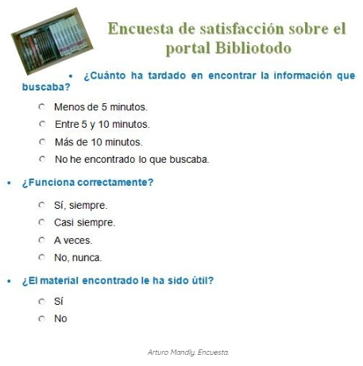

Introducción a la Estadística
CONTENIDO TÉMATICO:
- Muestras, población, variable
- Clases de muestras
- Recolección y organización de datos
- Análisis de gráficos estadísticos
La estadística es una disciplina fundamental que se utiliza para recolectar, organizar, analizar e interpretar datos. Su propósito es ayudarnos a tomar decisiones basadas en información objetiva. En la vida diaria, constantemente nos encontramos con estadísticas: desde los resultados deportivos hasta los censos de población, pasando por los estudios de mercado y las encuestas de opinión. Todo esto se basa en la estadística.

En esta unidad, aprenderemos a aplicar conceptos estadísticos para resolver problemas, interpretar datos y comprender cómo las estadísticas pueden influir en las decisiones que tomamos. Estudiaremos tanto las técnicas para recolectar datos de manera eficiente como las herramientas para analizarlos, tales como tablas, gráficos entre otros
Además, entenderemos que la estadística no solo sirve para resumir información, sino también para hacer inferencias sobre situaciones más grandes a partir de una muestra representativa. Así que, al finalizar esta unidad, podrás comprender mejor cómo se utilizan las estadísticas en diferentes áreas, desde la ciencia hasta la economía, y cómo afectan a la sociedad.
La estadística no solo es una herramienta académica, sino que también es una habilidad crucial en el mundo actual, ya que nos permite tomar decisiones informadas en un entorno lleno de información.
 En el siguiente enlace a un vídeo promocional de National Geographic, puedes ver a través de estadísticas y recuentos como será nuestra vida, en términos medios.
En el siguiente enlace a un vídeo promocional de National Geographic, puedes ver a través de estadísticas y recuentos como será nuestra vida, en términos medios.